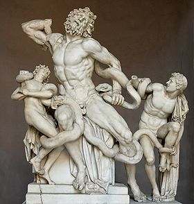

On Greed and the Vatican Museum
During my fifteenth or fourteenth year, my family spent a holiday in Hawaii. My dad, always patrolling to save money, rented us an apartment. I don’t remember why, but I do remember having to pass through the woman’s apartment who we rented from. She wore a muumuu that obliterated her corpulence under a single tent. But more impressive than the floral-patterned intimations of her size, was her apartment.
On either side of a limited passage rose boxes and boxes of clutter. Passing through her living room was like passing through the low valleys between the peaks of the Himalayas. It was decades of accumulation and mail-order catalogues, the shopping channel and trips to the supermarket with stops at the Hallmark store. There was so much that there wasn’t a surface, so all remained boxed and stacked.
The only difference between the muumuu woman’s apartment and the Vatican Museum is the value of the clutter. Yesterday was my third trip to the museums and each time it has become a running joke of how much one has to pass through to get to the Sistine Chapel. Granted, this time I was interested in the ancient collectables, but I was still overwhelmed with the sheer bulk of it. The Catholic church is the ultimate hoarder. Once a statue surfaced, their dirty hands holding the power and the money, snatched it up and built ostentatious palaces to surround it and now charge a whopping fifteen euros to go look at it. Not only are the pieces worth enormous amounts of money, but they overcharge the public for a single entry ticket, making an enormous amount of money.
Besides from this thief’s racket, I was constantly wondering why the Vatican clutches at every piece so greedily. If the statues were spread around one could actually begin to appreciate more than just the Laocoön and the Apollo Belvedere. I could begin to appreciate the fine working of the building’s adornments, stand back, relaxed and admire Raphael’s frescoes, instead of hurrying on to the next and the next and the next, mentally exhausted. Not to mention the depressing basement packed with contemporary art, like Matisse and Dali, that no one has the energy to see, especially in anticipation of Michelangelo’s magnificent ceiling.
The hypocrisy of the church doesn’t stop. We all know that under every fig leaf that has been plastered onto the statues, there is a penis. What immorality are they attempting to save us from, when the sins of greed and power and vanity are staring at us, directly in the face?

The amazing Laocoön. Image courtesy of Wikipedia.
· · · · · · · · · · · · · · · · · · · ·